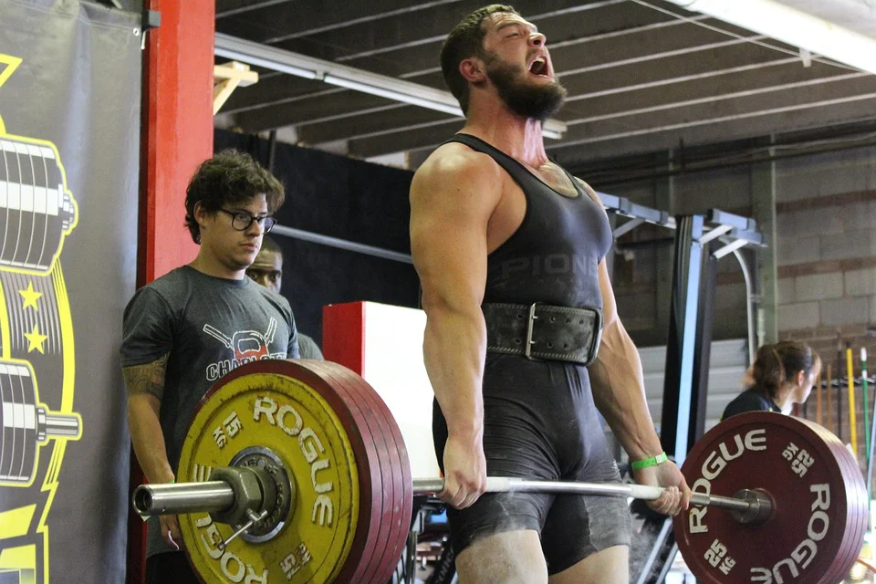
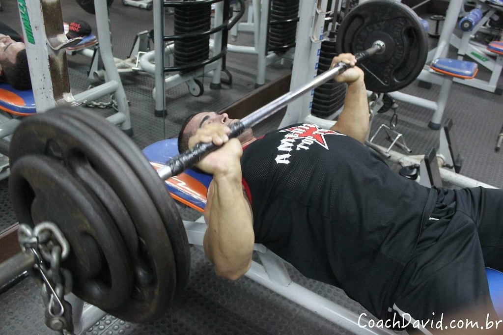
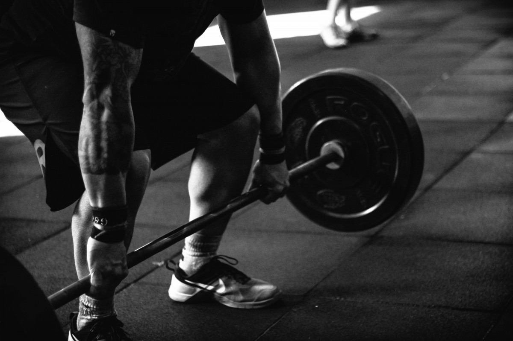
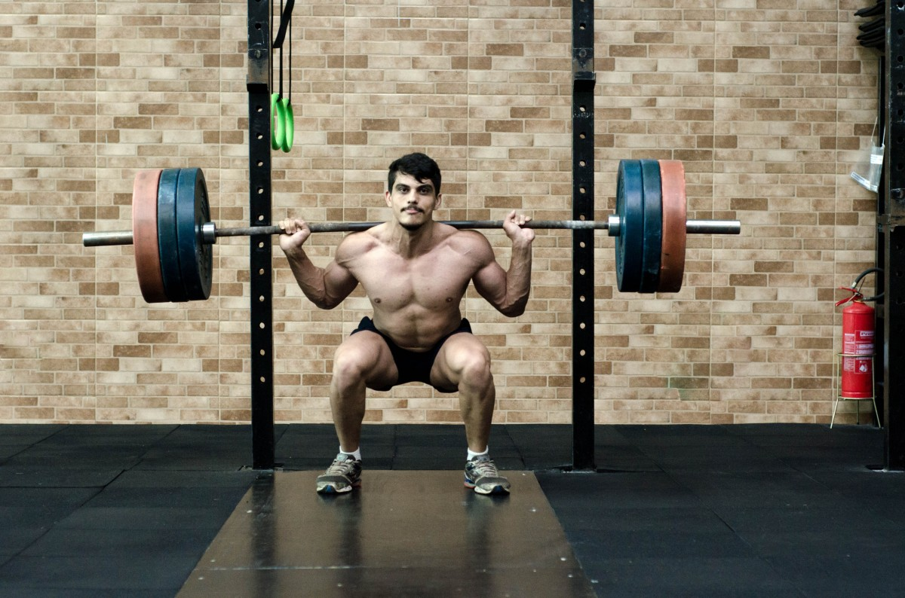
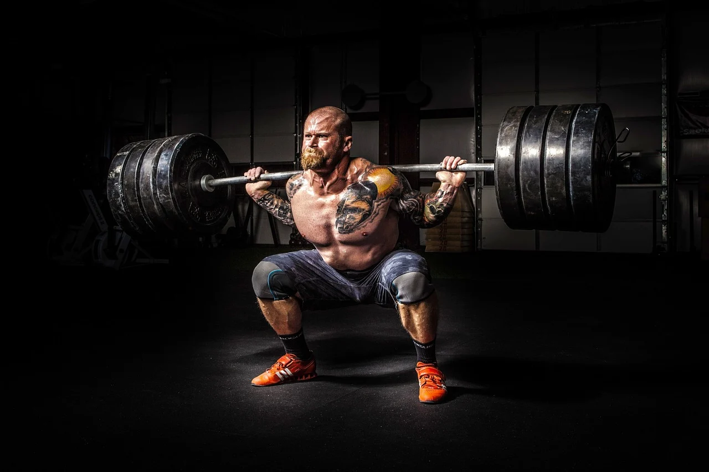

Powerlifting

O levantamento de peso, mais especificamente o powerlifting, é uma modalidade esportiva onde o foco é levantar a maior quantidade de peso dentro dos exercícos da modalidade.
Os únicos exercícios realizados são:
- Supino

- Deadlifting ou Levantamento terra

- Agachamento

Por se pegar muita carga nos exercícios é ideal fazer poucos movimentos, de 1 a 5 repetições.
É de extrema importância saber realizar os movimentos com a tecnica mais limpa possível.
A maneira certa de realizar os exercícios ocorre da seguinte maneira:
- Agachamento
- Para sacar a barra é importante você travar as escápulas e tensionar os músculos abdominais,
manter a barra numa altura confortável de saque e segurar firme.
Em seguida, para agachar é necessário fazer uma forte insipiração e descer controlado com a base firme.
Realizar o movimento com as pernas mais abertas, ou deixar mais fechadas é o gosto de quem realiza o movimento,
o melhor é o que te deixa mais confortável. Por fim, você deve subir novamente expirando o ar.
- Deadlift (ou levantamento terra)
- Para realizar o deadlift é necessário você manter as costas retas, segurar a barra ou com as duas mãos com a palma voltada para você,
ou uma palma voltada para você e outra para frente.
Você deve manter o abdomên tensionado descer para pegar a barra no chão e subir até a coluna ficar totalmente reta.
Você deve inspirar forte antes de levantar a barra.
- Supino
- No supino você deita deixando a barra numa altura confortável para o saque, segura a barra firme travando as escápulas,
mantendo o abdomên tensionando, você inspira profundamente e desce a barra até a altura do seu peito, subindo expirando o ar.
O powerliting é uma modalidade de esforço extremo, portanto são necessário alguns cuidados ao realizar este esporte:
Estes cuidados são:
- Boa técnica
- Boa alimentação
- Bom descanso
- Um bom mentor para te guiar
- Um bom mindset e uma boa resistência
Para quem gosta de levantar cargas altas, ter mais força e competir fazendo isso o powerlifting é um prato cheio.
Diversos campeonatos acontecem no mundo todo, e no Brasil há uma grande comunidade com várias competições como o "Campeonato brasileiro de powerlifting".
